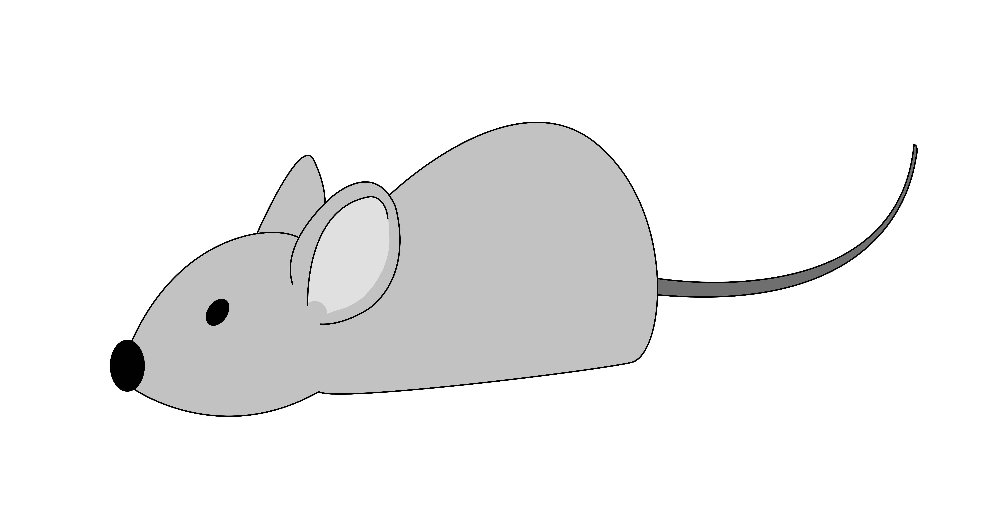

  <ion-menu side="start" menuId="custom" contentId="main"class="my-custom-menu">
    <ion-header>
      <div class="header headerNav">
        <ion-buttons slot="start">
          <ion-menu-button autoHide="false" color="light"></ion-menu-button>
        </ion-buttons>
        <!--<div class="header__greeting">{{today | date: 'dd/MM/yyyy'}}</div>-->
      </div>
    
    </ion-header>
  <ion-content>
    <ion-list>
      <ion-item (click)="navToPage('home')"> Home </ion-item>
      <ion-item (click)="navToPage('statistic')">Statistik</ion-item>
      <ion-item (click)="navToPage('fantasyleague')">Fantasy League</ion-item>
      <ion-item (click)="navToPage('avatar-setting')">Avatar</ion-item>
      <ion-item (click)="navToPage('store')">Marktplatz</ion-item>
      <ion-item >Einstellungen</ion-item>

    </ion-list>
  </ion-content>
  </ion-menu>
<ion-router-outlet id="main" ></ion-router-outlet>

<ion-header>
  <div class="header">
    <ion-buttons slot="start">
      <ion-menu-button autoHide="false" color="light"></ion-menu-button>
      <div class="titleSpan">TASKFOX</div>
      <div class="headerMoney">{{money}}</div>
        
      
    </ion-buttons> 
    
    
    <!--<div class="header__greeting">
      
      <span>
        
      </span>
    </div>-->
  
  </div>

</ion-header> 


<ion-content [fullscreen]="true">
  <ion-content padding>
    <ion-item>
      <ion-input [(ngModel)]="newItem.value" placeholder="Enter task" size="default">
        <!-- #taskInput -->
        <div class="item-note" item-end></div
      ></ion-input>
      <div class="item-note" item-end>
        <ion-button (click)="addItem(newItem.value)" size="default" color="medium">Add Task</ion-button>
      </div>
    </ion-item>
    <div>
      <ion-list #myList lines="none">
        <!-- <ion-reorder-group
          (ionItemReorder)="onItemReorder($event)"
          [disabled]="false"
        > -->

        <ion-item class="list" *ngFor="let item of itemsToDo">
          <!-- <ion-reorder slot="end"> -->

          <ion-item-sliding>
            <!-- [(ngModel)]="item.isChecked" -->
            <ion-item>
              <ion-checkbox color="primary" 
              (ionChange)="itemChecked($event, item)" 
              ></ion-checkbox>
              <!-- color change of the border checkbox 
              style=" --border-color: green;" -->
              <ion-label class="listItemLabel">
                {{item.title}} {{item.value}}</ion-label
              >
            </ion-item>
            <!-- [value]="currentItem.name"
            (input)="currentItem.name=$event.target.value" -->
            <ion-item-options side="end">
              <ion-item-option (click)="presentModal(item)"
                ><ion-icon name="create"></ion-icon
              ></ion-item-option>
              <ion-item-option (click)="deleteItem(item)">
                <ion-icon name="trash"></ion-icon
              ></ion-item-option>
            </ion-item-options>
          </ion-item-sliding>

          <!-- </ion-reorder> -->
        </ion-item>

        <!-- </ion-reorder-group> -->
      </ion-list>
    </div>
    <!-- <ion-button (click)="getTaskList()">Click me!</ion-button> -->
  </ion-content>

  <!-- <ion-list>
    <ion-item *ngFor="let todo of todos">
      <ion-label>{{ todo.value }}</ion-label>
      <ion-toggle checked="false"></ion-toggle>
    </ion-item>
  </ion-list> -->

  <!-- <ion-reorder-group (ionItemReorder)="onItemReorder($event)" [disabled]="false">
  <div class="list" *ngFor="let toDo of toDos">
      <ion-item>
        <ion-label>title: {{toDo.title}}</ion-label>
        <ion-label>id: {{toDo.id}}</ion-label>
        <ion-reorder slot="end"></ion-reorder>
      </ion-item>
  </div> 
</ion-reorder-group>

  <ion-button>
    <ion-icon slot="icon-only" name="add-outline"></ion-icon>
  </ion-button>
  <ion-item (click)="viewItem()">
    <ion-label position="floating">New ToDo</ion-label>
    <ion-input [(ngModel)]="inputToDoTitle"></ion-input>
  </ion-item>

  <ion-fab
    vertical="bottom"
    horizontal="end"
    slot="fixed"
    (click)="onAddToDo()"
  >
    <ion-fab-button>
      <ion-icon name="checkmark-outline"></ion-icon>
    </ion-fab-button>
  </ion-fab> -->
</ion-content>
